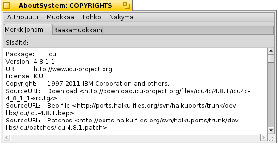

Suomi
Suomi Français
Français Deutsch
Deutsch Italiano
Italiano Русский
Русский Español
Español Svenska
Svenska 日本語
日本語 Українська
Українська 中文 ［中文］
中文 ［中文］ Português
Português Slovenčina
Slovenčina English
English Levyasemakoestin
Levyasemakoestin
| Työpöytäpalkki | ||
| Sijainti | /boot/system/apps/DiskProbe | |
| Asetukset | ~/config/settings/DiskProbe_data |
Levyasemakoestin on heksadesimaalieditori tiedostojen ja laitteiden tietojen katselemiseen ja muuttamiseen tavutasolla. Se on hyvin matalan tason työkalu ja sillä on mahdollista todella sotkea asiat, jos ei ole varovainen!
Kun Levyasemakoestin käynnistetään, ensimmäiseksi kysytään tiedostoa tai laitetta, jolla työskennellään. Sen jälkeen sinulle esitellään tämä käyttöliittymä:

Päänäkymä näyttää aina yhden tietolohkon, jonka koko voidaan säätää valikosta . Vasemmalla on siiirto-osoite lohkon alusta, keskellä tieto heksadesimaalilukuna ja oikealla sama ASCII-symboleina.
Voit siirtyä lohkosta lohkoon ylhäällä olevalla liukukytkimellä tai näppäimillä ALT ← ja ALT → ja vaihtaa heksadesimaali- ja ASCII-sarakkeiden välillä TAB-näppäimellä.
ei vain näytä valintaa eri endianess-tyyppeinä (ja heksadesimaalisena tai desimiaalisena, valikon asettamana), se tulkitsee myös valinnan siirto-osoitteena, johon voit hypätä. Se muuttuu harmaaksi, jos sijainti on tiedoston/laitteen ulkopuolella.
Tämä on kätevä ominaisuus katsottaessa tiedostojärjestelmiä, koska ne usein sisältävät osoittimia muihin lohkoihin.
Jos koestamasi tiedosto sisältää attribuutteja, -valikkoa voidaan käyttää avaamaan ne kaikki uudessa Levyasemakoestinikkunassa. Tässä on Järjestelmästä-sovelluksen copyright-attribuutti:

Riippuen attribuutin tyypistä saat erilaisen editorivälilehden aina läsnäolevan Raakaeditori-välilehden lisäksi. Esimerkiksi, merkkijonoja ja MIME-tyyppejä varten on editoreita tai kuvakekatselija vektorikuvakeattribuuttia varten.